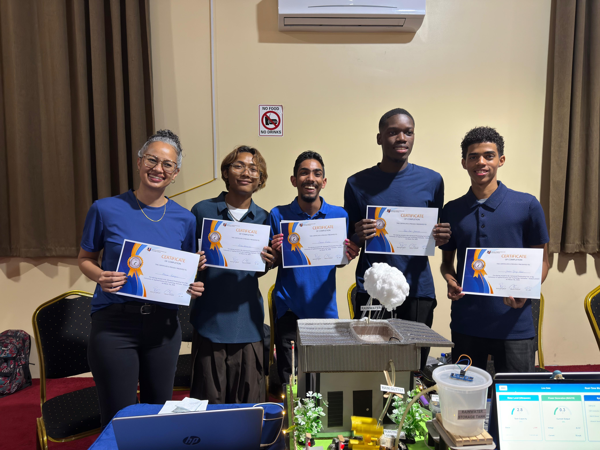

Current Role
Senior Officer Financial Processing at Assuria Verzekeringen N.V.
Digital Portfolio
I am a finance professional with a strong interest in process improvement, automation, financial control, and practical problem solving. I enjoy creating structure, improving workflows, and helping people work more efficiently.
Mission
My mission is to use financial knowledge, process thinking and technology to make work simpler, smarter and more reliable. I want to contribute to organizations by improving processes, supporting people, and creating solutions that bring clarity, efficiency and long-term value.
At a glance
Senior Officer Financial Processing at Assuria Verzekeringen N.V.
Business Informatics student at the University of Applied Sciences and Technology.
Co-owner of Mansa Group N.V. together with my husband, active in import, car rental and insurance.
Highlights

My most valuable achievement since starting at UNASAT is developing the WAI system and a working prototype with my team. We won 2nd place at the UNASAT Science Fair.
Read moreBeside my role at Assuria, I support our family business focused on import, car rental and insurance services.
Learn about meSkills